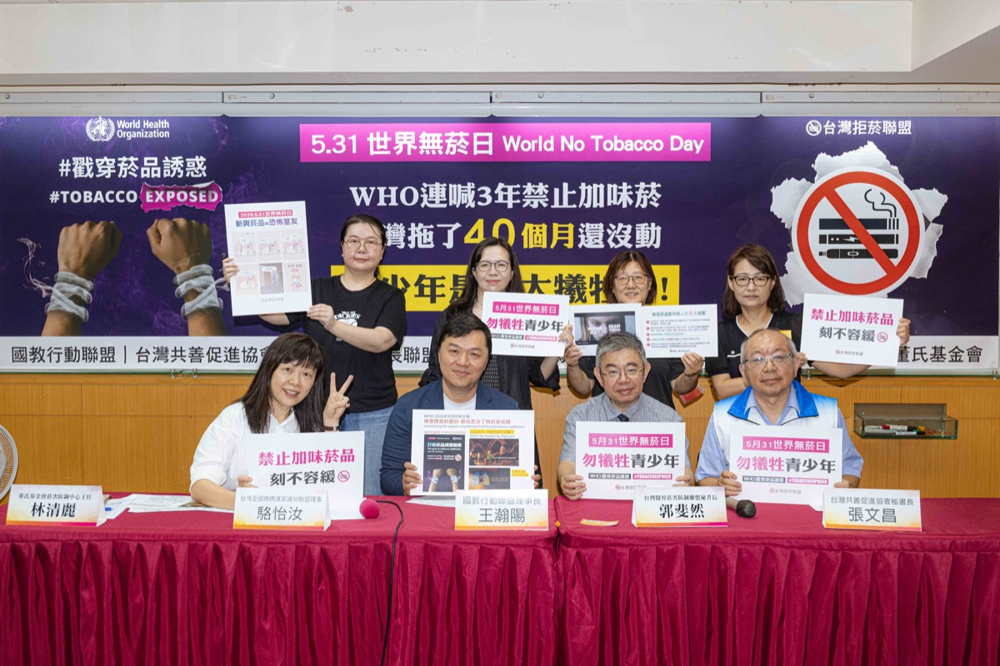

5 月 31 日世界無菸日前夕，6 民間團體籲落實禁加味菸：勿讓青少年成最大犧牲者
WHO 連喊 3 年禁止加味菸，台灣卻拖 40 個月還沒做
台灣拒菸聯盟呼籲賴總統：照顧 0-18 歲下一代，應先落實影響年輕人健康最深的禁止加味菸品

WHO 接連三年（2024-2026）揭露菸品藉風味添加物誘惑年輕人上癮，今年更推出「別被加味菸品騙了」影片，把新興菸品比喻為「恐怖室友」，呼籲各國政府為年輕人健康盡快「禁止」加味菸品。反觀台灣，自《菸害防制法》新法 2023 年上路以來，明明已立法，卻拖延超過 40 個月政府遲未公告「禁止菸品使用聞得到、嚐得到的風味添加物」。台灣拒菸聯盟於 5 月 31 日世界無菸日前夕召開記者會，呼籲賴總統照顧 0-18 歲的下一代，應先落實影響年輕人健康最深的禁止加味菸品做起。
立法明定禁止，行政卻拖延 40 個月
國教行動聯盟、台灣共善促進協會、全國家長會長聯盟、台灣全國媽媽護家護兒聯盟、董氏基金會、台灣醫界菸害防制聯盟共同說明：2023 年 1 月 12 日立法院三讀通過《菸害防制法》修正案，第 10 條立法意旨明確說明加味菸應予禁止，修法過程朝野黨團協商更達成「禁止菸草口味以外之加味菸品」決議，並授權國健署公告全面禁用。
結果衛福部國健署於 2023 年 3 月第一次預告僅禁止「花香、果香、巧克力及薄荷」4 種口味，被質疑後表示將再議；拖延 16 個月後，於 2024 年 8 月 8 日再次預告，竟將禁「口味添加物」變成禁「27 種成分」。聯盟質疑，看似禁止 27 種添加物，但菸商仍可從其餘上千種添加物提煉出相同口味，「破口愈補愈大」，一拖至今 40 個月尚未依法公告「除菸草原味外，禁止所有加味菸品」。
專家與家長團體齊聲：加味是青少年成癮的入門磚
尼古丁是大腦毒素，直接傷害青少年仍在發育的前額葉皮質，干擾認知、學習與衝動控制；新興菸品以「加味」策略降低戒心，成為青少年接觸菸品的入門磚。
—— 郭斐然｜台灣醫界菸害防制聯盟祕書長、醫師
台灣共善促進協會祕書長張文昌引述 WHO 指出，近九成青少年吸菸者首次嘗試的就是加味菸，且歐盟各國、加拿大及巴西等國皆已立法禁止加味菸品。台灣全國媽媽護家護兒聯盟理事駱怡汝表示，WHO 最新資料顯示全球有 1,500 萬名 13-15 歲青少年使用電子煙，提醒青少年遠離新興菸品；若推動無菸世代，應涵蓋加熱菸、尼古丁袋等所有已知與可能出現的新興菸品。

國教行動聯盟理事長王瀚陽指出，台灣禁加味菸政策還掛零，卻已讓加味加熱菸上市販售，菸草產業更趁機在網路上以口味行銷各式新興菸品，「嚴格管制新興菸品」恐淪空談。董氏基金會菸害防制中心主任林清麗說明，WHO 連三年以「揭穿菸商真面目」為主軸，強調菸草公司以加味菸品、魅惑行銷、酷炫裝置吸引年輕人，今年更把新興菸品比喻為「恐怖室友」。全國家長會長聯盟副理事長林珊如則提醒，「無菸城市」絕不等於設置「負壓吸菸室」，戶外吸菸區應遠離建物出入口、主要通道及人潮聚集處，降低兒童與青少年接觸吸菸畫面的機會。
台灣拒菸聯盟三項訴求
- 依法公告「除菸草原味外，禁止所有加味菸品」，加味加熱菸下架。
- 建立「衛生福利部新興菸品查緝平臺」，確實監控新興菸品的魅惑行銷。
- 推動無菸品世代。
常見問題
什麼是加味菸？為什麼要禁止？
加味菸是在菸品中添加聞得到或嚐得到的風味添加物（如花香、果香、薄荷、巧克力等），用以降低初次吸食的嗆辣與戒心。WHO 指出近九成青少年吸菸者首次嘗試的就是加味菸，因此呼籲各國禁止任何促進吸入的風味成分。
台灣不是已經立法了嗎？為什麼還沒禁？
2023 年 1 月立法院三讀通過《菸害防制法》修正案，第 10 條立法意旨明確應禁止加味菸，並授權國健署公告全面禁用。但國健署 2023 年首次預告僅禁 4 種口味、2024 年改為禁「27 種成分」，至今已拖延逾 40 個月，仍未依法公告「除菸草原味外，禁止所有加味菸品」。
加味加熱菸現在可以販售嗎？
台灣依法禁止電子煙、開放少部分通過健康風險評估審查的加熱菸。聯盟指出，在加味菸禁令尚未落實下卻已讓加味加熱菸上市，菸草產業更以口味在網路加強行銷新興菸品，使「嚴格管制新興菸品」面臨執行落差。
台灣拒菸聯盟提出哪三項訴求？
第一，依法公告「除菸草原味外，禁止所有加味菸品」、加味加熱菸下架；第二，建立「衛生福利部新興菸品查緝平臺」，確實監控新興菸品的魅惑行銷；第三，推動無菸品世代。
新聞聯絡人
- 國教行動聯盟 理事長 王瀚陽 0983-097-165
參考依據
- 《菸害防制法》第 10 條（2023 年 1 月 12 日三讀通過）
https://law.moj.gov.tw/LawClass/LawAll.aspx?pcode=L0070021 - World Health Organization｜World No Tobacco Day 2026
https://www.who.int/campaigns/world-no-tobacco-day - 歐盟第 2014/40/EU 號菸草產品指令（禁止具特徵性口味之菸草產品）
https://eur-lex.europa.eu/legal-content/EN/TXT/?uri=CELEX:32014L0040 - 衛生福利部國民健康署｜菸害防制專區
https://www.hpa.gov.tw/Pages/List.aspx?nodeid=41